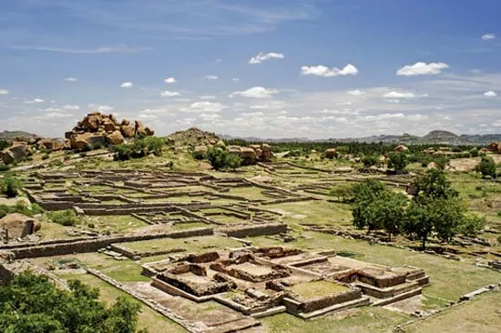
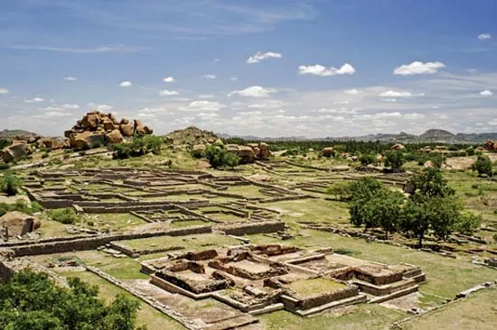
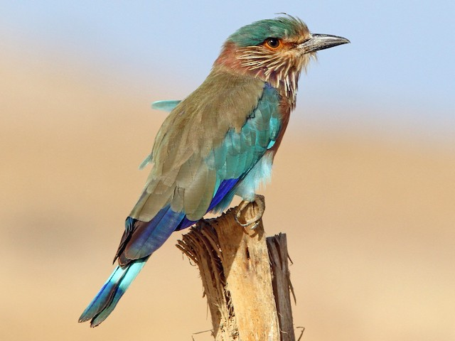
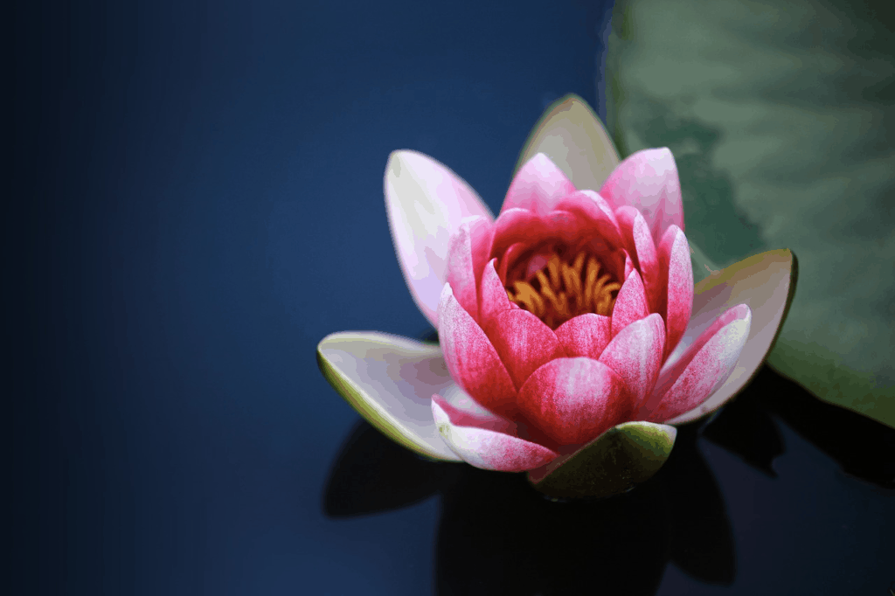
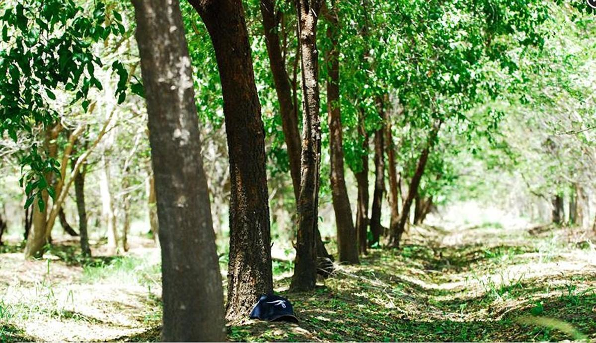
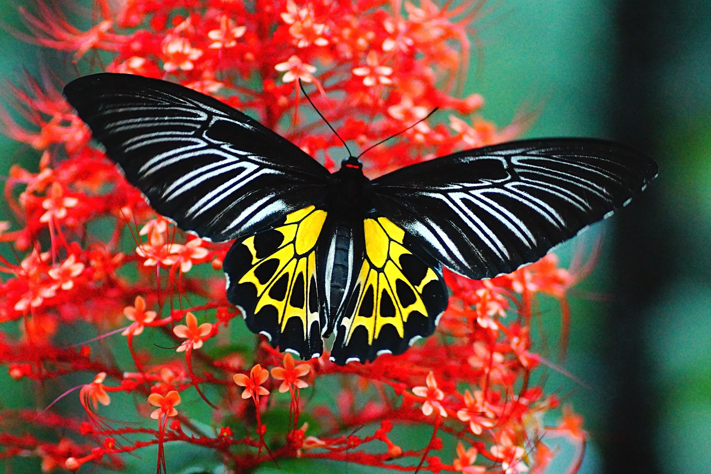

Karnataka, formerly (until 1973) Mysore, state of India, located on the western coast of the subcontinent. It is bounded by the states of Goa and Maharashtra to the north, Telangana to the east, Tamil Nadu to the southeast, and Kerala to the south and by the Arabian Sea to the west. The state extends for about 420 miles (675 km) from north to south and for about 300 miles (480 km) from east to west. Its coastline stretches for some 200 miles (320 km). The capital is Bengaluru (Bangalore), near the southeastern border.
Before the independence of India in 1947, Mysore was a prosperous and progressive but landlocked princely state, with an area of less than 30,000 square miles (78,000 square km), located on the Karnataka Plateau. The transfer of additional territories to the state in 1953 and 1956 united the Kannada-speaking peoples, gave the state an outlet to the sea, and greatly extended its boundaries. The state took its present name, a Kannada word meaning “lofty land,” in 1973. Area 74,051 square miles (191,791 square km). Pop. (2011) 61,130,704.
The name Mysore—or Mysuru, which more accurately reflects the pronunciation in Kannada—is from the Sanskrit word for “buffalo town,” as Karnataka formerly was called. It derives from the destruction of the buffalo-demon Mahishasura by the goddess Chamunda. The prehistory of Mysore is embedded in legends that concern the struggle that took place in southern India between Aryan peoples, who invaded from the north, and the original Dravidian inhabitants; in legendary form this struggle is represented as a conflict between devils and demons on the one hand and gods and goddesses on the other. The documented history of the region focuses mostly on the princely state of Mysore as it existed before 1953, for no one dynasty succeeded in ruling the whole region occupied by the Kannada-speaking peoples—the area that essentially constitutes present-day Karnataka.
| State Emblem | Emblem of Karnataka |  |
| State Animal | Asian Elephant |  |
| State Bird | Indian Roller / Blue Jay |
 |
| State Flower | Lotus |  |
| State Tree | Sandalwood |  |
| State Butterfly | Southern Birdwing |  |
| State Fruit | Mango |  |
Physiographically, Karnataka is divided into four distinct regions—the coastal plain, the hill ranges (the Western Ghats), the Karnataka Plateau to the east, and the black-soil tract to the northwest. The coastal plain represents a northward continuation of the Malabar Coast, with sand dunes giving place inland to small alluvial plains and lagoons. The coast itself is difficult to access, except by sea.
To the east of the coastal plain, the Western Ghats rise sharply to reach an average elevation of 2,500 to 3,000 feet (750 to 900 metres). The upland terrain of the Ghats is known as Malnad. The region is a watershed, and from its crest numerous swift streams flow to the plains, including the Sharavati River, which is the source of the tremendous Jog (Gersoppa) Falls (830 feet [253 metres] high).
Other rivers—including the Kaveri (Cauvery) to the south and the Tungabhadra, a tributary of the great Krishna River, to the north—flow over the undulating, eastward-sloping plains of the Karnataka Plateau. These plains are known as the Maidan. The plateau region has an average elevation of about 1,500 feet (450 metres).
The northwestern part of the state is characterized more by its soil than by its relief. In this region, underlying volcanic rock produces a soil known as regur, the humus-rich, cotton-growing black soil of India. By contrast, the soils of the adjacent Karnataka Plateau are generally porous and infertile, except in the river basins, where they are loamy and somewhat fertile. Soils in the coastal plain include iron-rich clays in the inland areas and sandy alluvial deposits toward the coast itself.
The climate of Karnataka is subtropical, with winter (January and February), summer (March through May), southwest monsoon (June through September), and post-monsoon (October through December) seasons. Maximum daily temperatures in winter reach the upper 80s F (low 30s C), whereas in the summer months temperatures rise into the low 100s F (about 40 °C). Annual precipitation ranges from roughly 20 inches (500 mm) in the drier portions of the Maidan to nearly 160 inches (4,000 mm) in the wettest parts of the coastal plain. Most of the state’s annual precipitation falls between June and September; much of the remainder is brought by a less-significant northeast monsoon that blows during the post-monsoon season. The winter months are particularly dry.
While coconut palms line the lagoons of the coastal plain region of Karnataka, monsoon forests cover the Malnad area of the Western Ghats, and scrub forests and scrublands stretch across the drier plains of the Maidan. The monsoon forests are especially rich in wildlife, which includes tigers, elephants, gaurs (wild cattle), and deer. Wild boars, bears, and leopards inhabit the Maidan. Peacocks are among the state’s common birds. Karnataka has many wildlife sanctuaries, including the large Dandeli Wildlife Sanctuary in the northwest, which abuts the Mahaveer sanctuary in Goa. The state also has several national parks, among the most notable of which are at Bandipur, in the south, near the border with Tamil Nadu, and at Nagarhole, in the southwest, near the border with Kerala.
As speakers of Dravidian languages, most of Karnataka’s people are considered to be the descendants of the so-called Dravidian population of India that was driven southward between about 2000 and 1500 BCE by the descent into the Asian subcontinent of speakers of Indo-Aryan languages. Although the Dravidians of South India remain distinct from the Indo-Aryans of North India, centuries of interaction between the two groups has resulted in many shared linguistic and cultural characteristics. Today in Karnataka, the northern region exhibits a somewhat greater degree of such mixture than does its southern counterpart.
Kannada, which is a Dravidian language, is spoken by a large majority of the population and is the official language of the state. Hindi is sometimes used in trade and business. Toward the borders of the state, other languages, such as Tamil and Telugu, both Dravidian, and Marathi and Konkani, both Indo-Aryan, are also spoken. Konkani is associated particularly with the city of Mangaluru (Mangalore), in southwestern Karnataka.
The predominant religion in the state is Hinduism. Jainism and Buddhism—once widespread—still have practitioners, however. Small portions of the population follow Islam and Christianity.

Agriculture engages the majority of the population. The coastal plain is intensively cultivated, with rice as the principal food crop, followed by sorghum (jowar) and millet (ragi). Sugarcane is the main cash crop, supplemented by cashews, cardamom, betel (areca) nut, and grapes. Coffee and tea plantations are located on the cool slopes of the Western Ghats; Karnataka is one of the country’s chief sources of coffee. In the eastern region, irrigation enables the cultivation of sugarcane, some rubber, and such fruits as bananas and oranges. The black soil of the northwest supports cotton, oilseeds, and peanuts (groundnuts).
The forests of the Malnad area in the west produce a significant portion of the world’s supply of sandalwood. Oil processed from sandalwood in Mysuru also is a leading state export. Other important forest products include teak, eucalyptus, rosewood, bamboo, and such substances as tanning dyes, gums, and lac (used in the manufacture of varnishes).
Karnataka is mineral-rich. The state is a major source of chromite, and it is one of the few states of India that produces magnesite. High-grade iron ore reserves are tapped most notably in Bellary district, in the east-central part of the state. Kolar Gold Fields, near Bengaluru, yielded much of the country’s gold in the 20th century; by the early 21st century, however, virtual depletion of the deposits and high operating costs forced the mines to close. Other minerals that have been extracted in Karnataka, albeit in small quantities, include mica, copper ore, bauxite, and garnet.
Karnataka’s many hydroelectric plants generate enough power not only to meet local needs but also to distribute to neighbouring states. The hydroelectric station on the Sharavati River near Jog Falls is an especially large facility that supplies power to many of Karnataka’s industries. Additional energy is provided by thermal- and wind-powered plants.
The mineral resources of the state feed the iron and steel mills of Bhadravati and the heavy engineering works of Bengaluru. Other industries in the state include cotton milling, sugar processing, and the manufacture of textiles, food products, electrical machinery, fertilizers, cement, and paper. Both Mysuru and Bengaluru have long-established sericulture industries that produce much of India’s mulberry silk.
The obstacle formed by the Western Ghats has hindered the building of railroads to link the state’s numerous minor ports to the plateau in the interior. Bengaluru, in the southeast, is the main focus of rail transportation. The port of Mangaluru, in the southwest, is connected to Mumbai (Bombay) in Mahrashtra by tracks running parallel to the coast through the state of Goa.
The import and export trade relies primarily on road transport, but many roads in the western part of the state become impassable during the rainy season. National highways run from Bengaluru east to Chennai (Madras) in Tamil Nadu, north to Hyderabad in Telangana, northwest to Mumbai, and west through Hassan to the coast of Mangalore. Airports are located at Bengaluru, Belgavi, and Mangaluru.
A state insurance scheme covers sickness, maternity, and employment injuries and provides medical treatment to workers (and their families) in various professions. Welfare schemes are run by the government for socially and economically disadvantaged groups. State agencies also provide welfare services specifically for women and children.
With a literacy rate that had reached about two-thirds by the early 21st century (a rate higher than the national average), Karnataka has one of the most highly educated populations in India. The state has a large number of schools and educational institutions, nearly half of which are managed by the government; the remainder are operated by local boards and private bodies. Compulsory free primary education is provided in most towns and villages. Among Karnataka’s oldest and most-prominent institutions of higher learning are the Indian Institute of Science (1909), Bangalore University (1964), and the University of Agricultural Sciences (1964)—all in Bengaluru—as well as the University of Mysore (1916) in Mysuru, Karnatak University (1949) in Dharwad, Gulbarga University (1980) in Kalaburagi, and Mangalore University (1980) in Mangaluru.